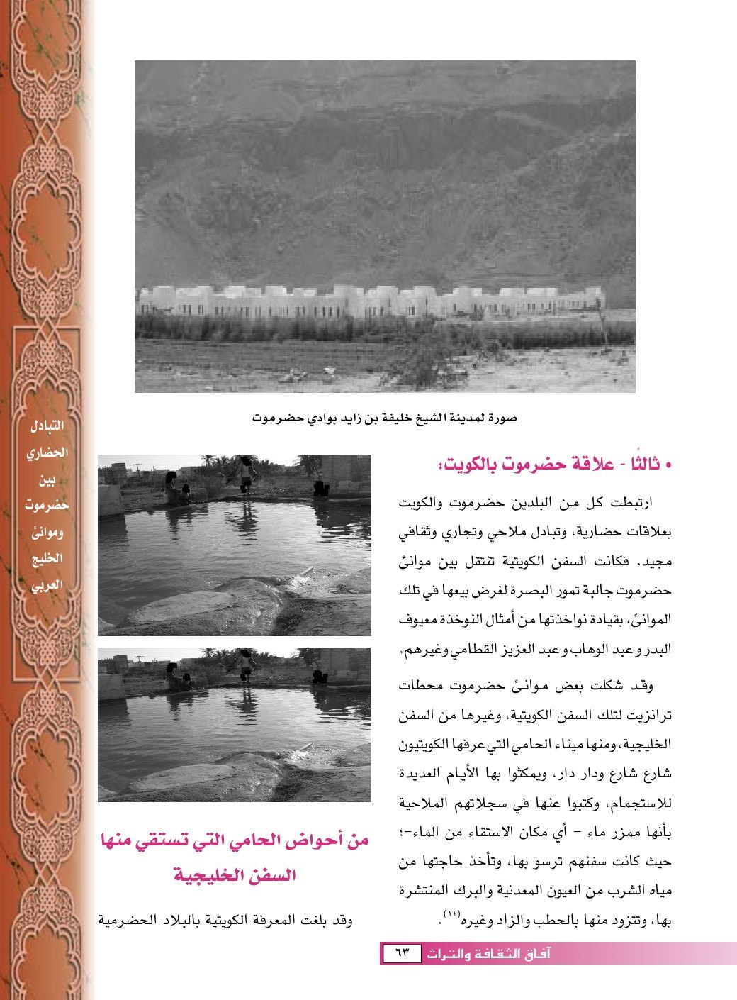
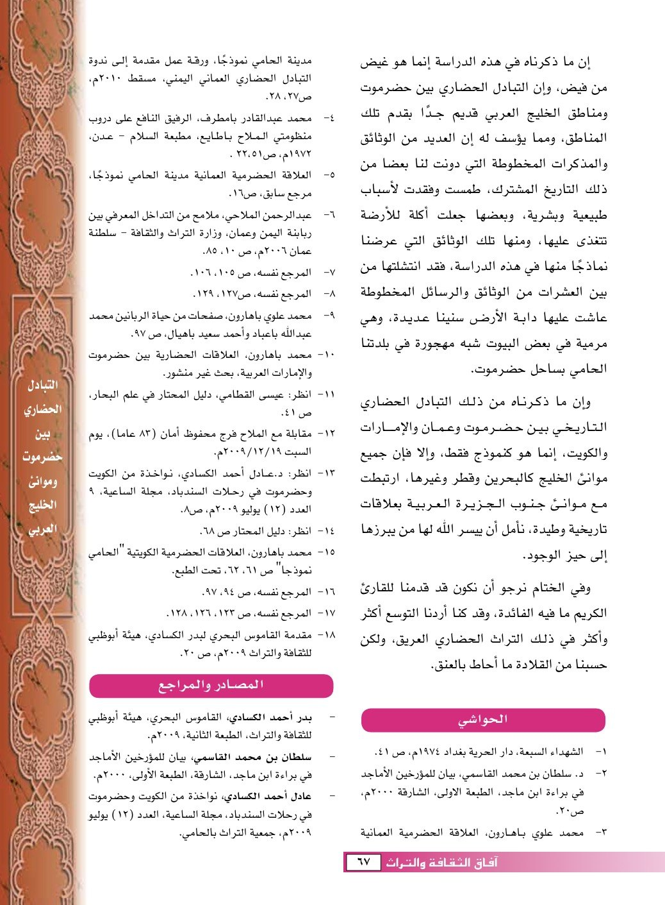
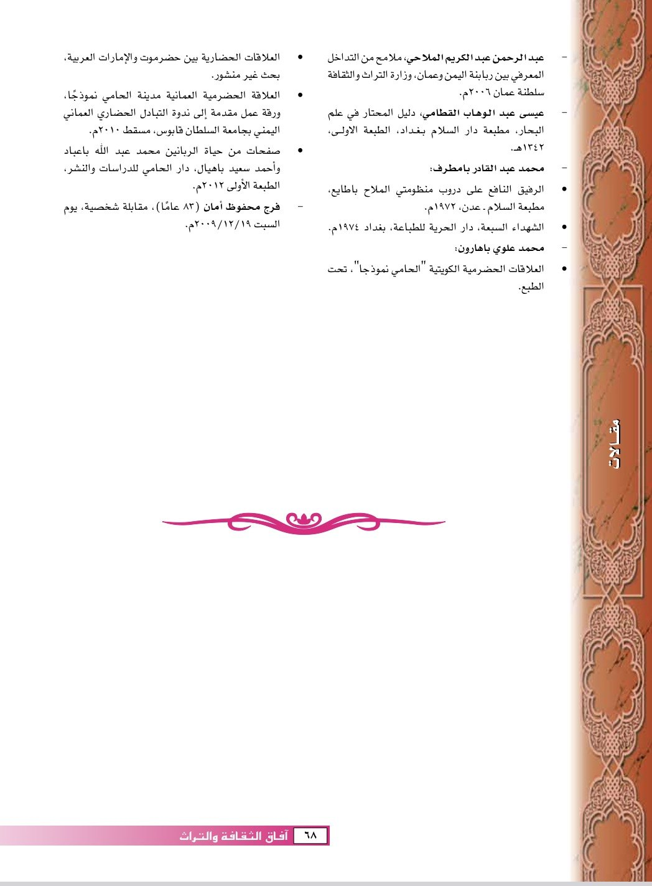

Afaq Al-Thaqafa wal-Turath · Journal article, Mohammed Alawi Abdulrahman Baharoon, «Al-Tabadul Al-Hadari bayna Hadhramaut wa Mawani Al-Khaleej Al-Arabi», Afaq Al-Thaqafa wal-Turath, pages 55 to 68
Hadhramaut and the Gulf ports: Al-Qatami ships and Dalil Al-Muhtar in Yemen
What it is
A study of the ties between Hadhramaut and the ports of the Arabian Gulf. Page 63 says Kuwaiti ships moved between the ports of Hadhramaut carrying Basra dates for sale, «led by their nakhudas, such as Nakhuda Mayouf Al-Badr and Abdulwahab and Abdulaziz Al-Qatami». Page 65 says many navigators of Hadhramaut owned the work of «the Kuwaiti captain Eissa Abdulwahab Al-Qatami, called Dalil Al-Muhtar fi Ilm Al-Bihar», passing it among themselves in manuscript and print, and that some, among them Captain Mohammed Abdullah Ba'abbad, abridged it into chapters; Hadhrami sailors also kept verses of Bataye’, as shown by «Dalil Al-Muhtar of Captain Ibn Qatami». The notes and references on pages 67 and 68 cite the book, Dar Al-Salam press, Baghdad, first edition.
Why it matters
Shows Dalil Al-Muhtar in use by the navigators of Hadhramaut, and Al-Qatami nakhudas trading in Hadhrami ports.
Page copies





Others named
Sources
Mohammed Alawi Abdulrahman Baharoon, «Al-Tabadul Al-Hadari bayna Hadhramaut wa Mawani Al-Khaleej Al-Arabi», Afaq Al-Thaqafa wal-Turath, pages 55, 63, 65, 67 and 68
How this text was made: The issue number and year are not on the pages sent. The article does not say which Abdulwahab Al-Qatami traded to Hadhramaut. Pages 56 to 62, 64 and 66 do not name the family and are not included.
Open in the interactive site